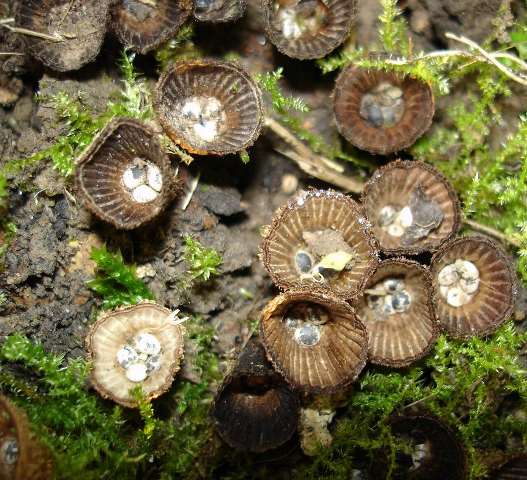

चिड़िया घोंसला खुम्बीFluted Bird's Nest Fungus
Cyathus striatus · Nidulariaceae · FNG-0015

- Scientific name
- Cyathus striatus (Huds.) Willd.
- Family
- Nidulariaceae
- Hindi
- चिड़िया घोंसला खुम्बी
- Status here
- native
- IUCN
- not evaluated
When to look कब देखें
Expected mainly in July, August, September, October.
चिड़िया घोंसला खुम्बी / Fluted Bird's Nest Fungus
Cyathus striatus (Huds.) Willd. — Nidulariaceae
चिड़िया घोंसला खुम्बी (चिड़िया घोंसला मशरूम / स्प्लैश कप फंगस / धारीदार कप कवक) — पूर्वी उत्तर प्रदेश के बगीचों में सड़ रही गीली लकड़ियों, सूखे पत्तों के ढेरों और नम जंगलों की सीमाओं में मानसून (July to October) में उगने वाला एक बहुत ही छोटा, सुंदर और कौतुकपूर्ण सूक्ष्म-कवक (photogenic micro-fungus) है। इसकी ऊंचाई केवल 5 से 15 मिमी होती है। इसकी सबसे बड़ी पहचान इसका छोटा, कप या फूलदान जैसा आकार है जो अंदर से एक नन्हे चिड़िया के घोंसले जैसा दिखता है, जिसके तल पर 10 से 15 छोटे गोल 'अंडे' रखे महसूस होते हैं। इन अंडों को वैज्ञानिक भाषा में पेरिडियोल्स (peridioles / spore packets) कहा जाता है, जिनमें इस कवक के बीजाणु भरे होते हैं। जब बारिश की बूंदें इस कप के अंदर गिरती हैं, तो उनका दबाव एक प्राकृतिक गुलेल या कैटापुल्ट (splash-cup catapult mechanism) का काम करता है, जिससे ये अंडे उछलकर लगभग 1 से 2 मीटर दूर जा गिरते हैं। प्रत्येक अंडा एक कुंडलित धागे (funiculus) से बंधा होता है जो उड़ते समय खुलकर आसपास की टहनियों से लिपट जाता है। यह कवक अखाद्य (inedible) है।
Quick Identification त्वरित पहचान
| Feature | Description |
|---|---|
| Cup shape | Tiny, cup-like or narrow vase-like fruit body, 5–15 mm tall and 4–8 cm wide at the top opening |
| Inner cup wall | Strongly marked with vertical, parallel grooves or ridges (fluted), shiny, dark greyish-brown |
| Outer cup wall | Hairy, covered in coarse shaggy, rusty-brown to dark brown hair, looking like a miniature nest |
| Peridioles ("eggs") | 10–15 count, oval, flattened, lentil-shaped (1.5–2 mm wide), dark grey or blackish-brown |
| Spore dispersal | Raindrops splash into the cup, ejecting the egg packets via a splash-cup catapult mechanism |
Field tip: Look closely at decaying wood mulch under garden hedges in August. Look for tiny brown cups lined with vertical stripes, smaller than a thumbnail. Peer inside; you will see tiny grey lentil-like "eggs" sitting at the bottom of the cup.
Morphology आकारिकी
Biometrics (typical measurements of mature fruit bodies in the northern Indian plains):
| Measurement | Range |
|---|---|
| Cup height | 5.0–15.0 mm |
| Cup rim diameter | 4.0–8.0 mm |
| Peridiole diameter | 1.5–2.0 mm |
| Peridioles per cup | 10–15 |
| Spore size | 15–20 × 8–10 µm |
Peridium (Cup Wall): Made of three layers. When young, the cup opening is covered by a thin white membrane (epiphragm) that tears open as the cup matures.
Peridioles: Dark grey, hard, each holding a mass of spores. They are attached to the inner wall by a complex coiled cord (funiculus).
Dispersal Cord: The cord contains a sticky base (hapteron) at the end. When wet, it stretches and winds around nearby twigs to anchor the spore packet.
Ecology and Substrate पारिस्थितिकी और उपस्तर
- Decomposer: Saprotrophic fungus, decomposing dead twigs, woody mulch, and organic garden compost.
- Substrate: Found growing in clusters directly on rotting deciduous wood chips and moist leaf litter.
- Edibility safety caveat:
> [!NOTE]
> This micro-fungus is strictly inedible due to its tiny size, tough fibrous walls, and lack of any culinary food value. It presents no toxicity warning, but foraging wild micro-fungi for food should be completely avoided.
Associated Species / Interactions संबंधित प्रजातियाँ
- Raindrop Catapult: The physical shape of the cup is a highly evolved splash-cup. A raindrop falling at terminal velocity hits the sloping cup wall, displacing the water at the bottom and throwing the peridiole out at speeds up to 4 meters per second.
- Herbivore dispersal: Spore packets stuck to leaves are eaten by grazing snails or insects, which pass the spores intact in their droppings.
Expected Locally स्थानीय रूप से अपेक्षित
Not a field record. Written from published accounts for eastern Uttar Pradesh. No confirmed local sighting yet — if you have seen it, that is what the atlas needs.
अभी तक स्थानीय पुष्टि नहीं। यह विवरण प्रकाशित स्रोतों से है, किसी अवलोकन से नहीं।
A beautiful but overlooked micro-fungus observed in managed gardens and Sal tree leaf litter zones across the Basti district during monsoons, regularly recorded in the Basti block. Local nature club volunteers study the "splash-cup" mechanism by dropping water droplets from a syringe into the dry cups, watching the grey egg packets fly out onto white sheets of paper.
Distribution वितरण
Global range: Widespread across temperate and tropical zones of North America, Europe, and Asia.
In India: Found in all moist forest divisions and garden ecosystems throughout the country.
In Uttar Pradesh: Distributed state-wide in moist shaded gardens and parks.
In Basti district / eastern UP: Found in garden wood mulch.
Research Questions शोध प्रश्न
Anyone can investigate these | कोई भी इन प्रश्नों की जाँच कर सकता है
- How far (in centimeters) can a peridiole be ejected when a water droplet is dropped from a height of 1 meter into the cup? — Measure and record flight distances (Excellent Citizen Science Project for kids!).
- What is the number of Bird's Nest cups found on a decaying mango wood chip compared to a dry twig? — Track substrate preference.
- Does the white membrane covering the cup top open faster in high humidity compared to dry winds? — Monitor membrane split times.
- How many hours does the sticky base (hapteron) of the extended thread take to glue itself securely to a green leaf? — Test adhesive strength.
- Does the population count of Bird's Nest cups increase in soil beds mixed with rotting leaf compost in Basti? / क्या बस्ती में सड़ रही पत्तियों की खाद मिश्रित मिट्टी में चिड़िया घोंसला खुम्बी की संख्या बढ़ जाती है? — Compare counts in composted vs clay beds.
Similar Species मिलती-जुलती प्रजातियाँ
| Species | How to tell apart | comparison |
|---|---|---|
| Common Bird's Nest (Crucibulum laeve) | Inner cup wall is completely smooth (no grooves); outer surface is yellow-brown; peridioles are light yellow | साधारण घोंसला खुम्बी — चिकनी अंदरूनी दीवार |
| Dung Bird's Nest (Cyathus stercoreus) | Grows strictly on dung or highly manured soil; outer surface is shaggy but lacks parallel grooves | गोबर घोंसला खुम्बी — चिकनी अंदरूनी दीवार, गोबर वास |
| Dung Cannon Fungus (Sphaerobolus stellatus) | Tiny yellow ball; cup splits open like a star to launch a single sticky spore ball up to 4 meters | तोप खुम्बी — एकल बीजाणु तोप, पीला रंग |
Field rule: Tiny cup-shaped fungus (5–15 mm) with vertical grooves inside, covered in brown shaggy hair outside, containing 10–15 flat grey lentil-like "eggs" at the bottom, is the Fluted Bird's Nest Fungus.
Taxonomy & Classification वर्गीकरण
Original description. William Hudson described this species as Peziza striata in 1778. Carl Ludwig Willdenow placed it in the genus Cyathus in 1787 in his Florae Berolinensis Prodromus (p. 399). The genus name Cyathus is derived from the Greek kyathos, meaning cup. The specific name striatus is Latin for grooved or striated, referencing the inner cup wall.
Subspecies. Monotypic — no subspecies are currently recognised in the main index.
Family and order placement. Placed in the order Agaricales, family Nidulariaceae (bird's nest family), genus Cyathus.
Phylogenetic notes. Cyathus striatus represents a highly specialized lineage within Agaricales. Although closely related to gilled mushrooms, it has evolved a closed gasteroid structure (peridioles) and splash-cup physics to utilize monsoonal raindrops as mechanical dispersal vectors.
IUCN status rationale. Not evaluated (NE) by the IUCN Red List. It has a secure, stable, and abundant global population.
Photo Gallery फोटो गैलरी
References संदर्भ
- Willdenow, C. L. (1787). Florae Berolinensis Prodromus. Berlin, p. 399. [original generic transfer]
- Hudson, W. (1778). Flora Anglica. London, ed. 2, p. 634. [original description as Peziza striata]
- Bilgrami, K. S., Jamaluddin, S. & Rizwi, M. A. (1979). Fungi of India. Today and Tomorrow's Printers & Publishers, New Delhi.
- Brodie, H. J. (1975). The Bird's Nest Fungi. University of Toronto Press (the definitive monograph on Nidulariaceae).
- World Flora Online (2024). Cyathus striatus details.
- GBIF Occurrence Data — Cyathus striatus, India (2010–2025).
Source file: species/fungi/mushrooms/birds_nest_fungus.md